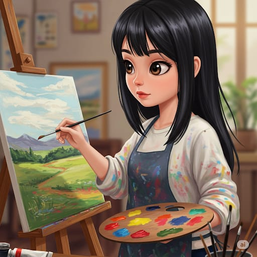

Sanatçılarımız
Hatice Fer
1978'de Bursa'da doğan Hatice Fer, Türk Ebru sanatının önde gelen isimlerindendir. Marmara Üniversitesi Geleneksel Türk Sanatları Bölümü'nde Ebru üzerine yoğunlaştı...
DetaylarAli Pek
1975 yılında İstanbul'da doğan Ali Pek, Mimar Sinan Güzel Sanatlar Üniversitesinden 1997 yılında mezun oldu. Manzara resimleri yapmayı sever...
Detaylar
Arda Demir
Arda Demir, renkli kişiliği ve enerjik fırça darbeleriyle tanınan bir ressamdır. Ankara'da doğan Arda, sanata olan ilgisini genç yaşta keşfetmiş ve bu tutkusunu profesyonel bir kariyere dönüştürmüştür...
Detaylar

Elif Kaya
Elif Kaya,karakterlerin iç dünyalarını yansıtmayı ve izleyiciyle duygusal bir bağ kurmayı amaçlar.
Detaylar